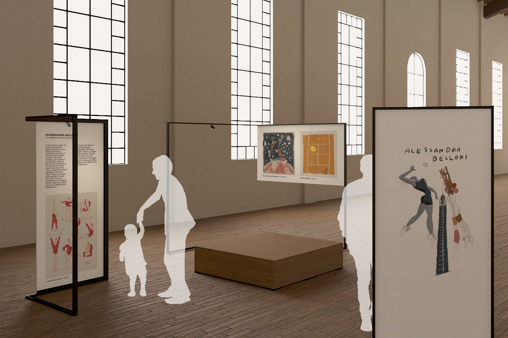
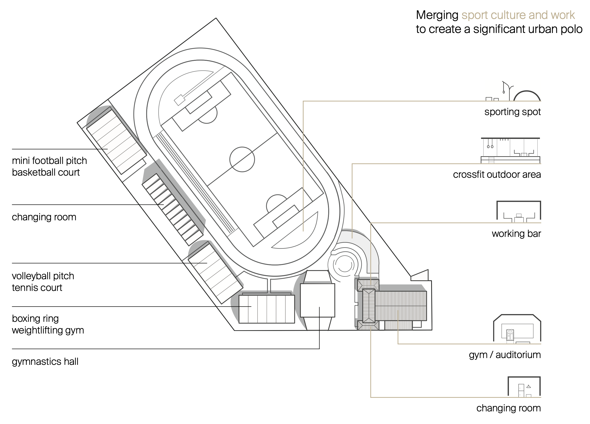
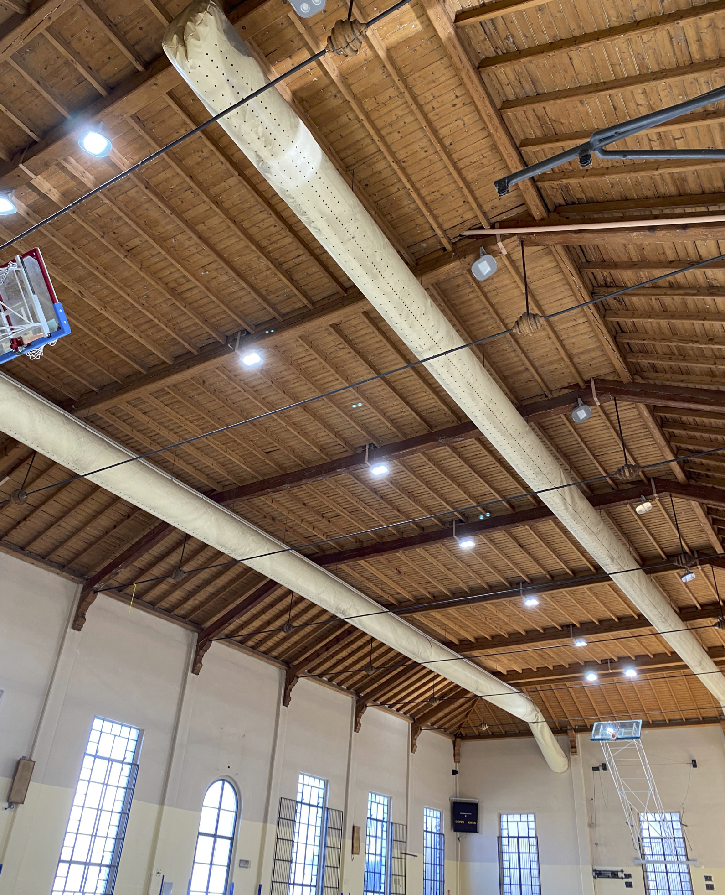

BRIEF
Renovate a historical sports center in Milan to help it align with the evolving district where it is located.
DESIGN METHODS
context research, moodboard, spatial branding, FF&E selection, 3D modelling, rendering
SOLUTION
The project aimed to renovate the centre in order to attract the target group that now frequents the district, while preserving its historical identity and function as a meeting place.
Therefore, the new masterplan retains and relocates existing functions and services to create a new area for a different type of subscription that aligns with the target audience.
Furthermore, additional external sports facilities are incorporated into the design of the site. Above all, the whole site is intended to serve as a multifunctional space for hosting cultural activities at night, with the aim of providing a vibrant and inclusive environment that caters to a diverse range of interests and activities.

PERSONAL CONTRIBUTION
My focus was on the context research and concept development phases. I was also responsible for creating the 3D model and renders.
MASTERPLAN
Although the renovation focused on a single building and its surrounding area, the initial project phase involved developing a new masterplan for the entire centre.
This took into account the existing sports facilities and maintained their original function. At the same time, it specified the new and changeable services for the redesigned area.

SPATIAL IDENTITY
The design choice for the interiors was clear: to maintain and emphasise the existing features in terms of colours, materials, and finishes.
However, the project did not simply aim to imitate and reproduce what was already there. Instead, the moodboard first and the design later, draw from the site survey and re-elaborated that impression in a modern style that aligns well with the surrounding district.
Every element was designed accordingly. This included new multifunctional furniture and finishes. Each element was designed into the finest details.

more details here
-> Project book
-> Technical drawings